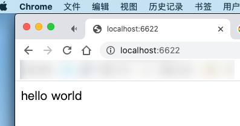
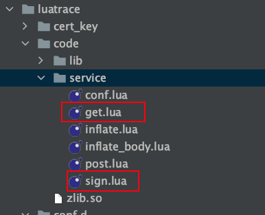

openresty 开发记录
这段时间需要做一个签名验证的模块 . 因为 golang 的 rsa 性能问题需要用 nginx-opensty 来开发 , 在这个过程中遇到了一些问题和结果方法 , 在这里记录一下 .
安装
在 mac 下可以直接在 termina 中 brew install openresty/brew/openresty 来安装
安装后 operesty 的目录在 /usr/local/Cellar/openresty/1.17.8.2_1 下 , 最后是 openrsty 的版本号
nginx 配置文件的目录在 /usr/local/etc/openresty/ 下
nginx 的日志文件在 /usr/local/var/log/nginx/ 下
这些信息都可以使用openresty -h 来查看

安装好后可以直接用openresty 来启动
重载配置文件或停止 nginx 可以用 openresty -s signal 来实现 , 和 nginx -s signal 的效果是一样的
hello world
nginx 的默认文件是 /usr/local/etc/openresty/nginx.conf
修改该配置文件中的 http 块添加我们自己工作目录中的配置文件
include /Users/noelz/work/openresty/conf/*;
然后在 ~/work/openresty/conf/ 下添加 a.conf 文件
server {
listen 6622;
set $path /Users/noelz/work/openresty/code;
location / {
default_type text/html;
lua_code_cache off;
access_by_lua_file $path/hellow_world.lua;
}
}
在 ~/work/openresty/code/ 添加 hellow_world.lua 文件
ngx.say('hello world')
现在的 work 目录下的结构如下
├── code │ └── hellow_world.lua └── conf └── a.conf
重载配置文件 openresty -s reload 然后在浏览器中打开 localhost:6622

openresty 的项目组织
稍微复杂的一点的功能都不可能是单文件 , 肯定要引用其他的模块 . 既然要引用其他模块 , 肯定要让 openresty 知道你的代码目录在哪 . lua_package_path 这个配置项就能完成这项功能
比如下面这个配置文件
lua_package_cpath '/luatrace/code/?.so;/data/code/?.so;;';
lua_package_path '/luatrace/code/?.lua;/data/code/?.lua;;';
init_by_lua_file /luatrace/code/service/conf.lua;
server {
set $path /data/code/service;
listen 80;
location /get {
default_type text/html;
lua_code_cache off;
access_by_lua_file $path/get.lua;
}
}
这个配置的前两行制定了 lua 和 c 代码或资源库的加载路径
比如在 get.lua 文件中引入了其他的模块 , 可以这样来引入 local signlib = require "service.sign"
get.lua 和 sign.lua 的文件位置如下

openresty 的加密库 lua_resty_nettle
因为我做的是签名验证相关的项目 , 肯定需要一些 sha256 或 hmac 之类的库 . 而** lua-resty-nettle** 就是干这个的
如果用 openresty 的包管理器 opm 来安装一般不会遇到什么问题 , 但是一开始我是直接把 nettle 库的 lua 代码直接下载下来放到 openresty 的 lib 目录下 . 因为 nettle 库会引用 c 语言编译好的 .so 文件 , 所以还需要安装 c 语言版的 nettle . 直接使用 brew install nettle 来安装就行了
openresty 中不同的阶段
在 openrest 中可以指定不同的加载阶段来执行不同的 lua 代码
lua_package_cpath '/data/code/?.so;/data/code/?.so;;';
lua_package_path '/data/code/?.lua;/data/code/?.lua;;';
init_by_lua_file /data/code/service/conf.lua;
server {
set $path /data/code/service;
listen 80;
location /a {
access_by_lua_file $path/get.lua;
}
location /b {
rewrite_by_lua_file $path/inflate_body.lua;
access_by_lua_file $path/post.lua;
}
}
- 第三行的
init_by_lua_file是用来加载全局的配置文件的 , 在 openresty 刚启动的时候运行 - 第十一行的
rewrite_by_lua_file通常是用来检查改写 URI 但也可以操作响应体 , 做编码解码工作 . 在这个示例中就是来解压 gzip 的 - 第八行和第十二行的
access_by_lua_file就是来做主要的业务逻辑的 , 返回具体的相应内容
还有其他几个阶段 , 我这里没有用到 . 可以在这个链接找到更多的信息
openresty 中的全局变量
在 openresty 启动的时候读取配置文件 , 把配置文件的配置项放到全局变量里 , 方便其他的模块来使用 .
这种需求可以使用模块变量来解决 .
定义在模块里面的变量称为模块变量。无论定义变量时有没有加 local ，有没有通过 _M 把变量引用起来， 定义在模块里面的变量都是模块变量 .
比如在上面的配置文件的第三行中的 lua 代码就是读取了配置文件然后返回一个模块变量
local lfs = require("lfs")
local str = require "lib.str"
local conf = {}
local path = '/data/conf/'
for file in lfs.dir(path) do
if string.match(file, '.json') then
local key = str.split(file, '.')[1]
file = io.open(path .. '/' .. file, "r")
local content = file:read('*all')
file:close()
conf[key] = content
end
end
return conf
然后在其他的模块中就可以引用上面的 conf 模块了
-- 引入 conf 模块 , 它就是个全局变量
local conf = require "service.conf"
print(conf['xxx'])
lua 的 split 和 hex
虽然 lua 中有 string.gmatch 这样万能的字符串操作库 , 但是我只是临时用下 lua , gmatch 这个函数我有点用不来 . 所以下面是我封装的字符串分割 , 以及字符串转 16 进制的两个函数
function split(inputstr, sep)
inputstr = inputstr or ''
if sep == nil then
sep = "%s"
end
local t = {}
for str in string.gmatch(inputstr, "([^" .. sep .. "]+)") do
table.insert(t, str)
end
return t
end
function hex(str, spacer)
return string.lower((string.gsub(str, "(.)", function(c)
return string.format("%02X%s", string.byte(c), spacer or "")
end)))
end
- 原文作者：Noel
- 原文链接：https://blog.18881888.xyz/post/2020.9.12_openresty-%E5%BC%80%E5%8F%91%E8%AE%B0%E5%BD%95/
- 版权声明：本作品采用知识共享署名-非商业性使用-禁止演绎 4.0 国际许可协议进行许可，非商业转载请注明出处（作者，原文链接），商业转载请联系作者获得授权。